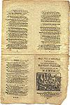
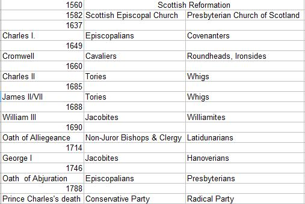

Awa' Whigs Awa'
Dehors, les Whigs!
Terminology - Terminologie
Scots [1] text partly ascribed to Robert Burns (c. 1790) [2]
Texte "Scots" [1] attribué en partie à Robert Burns (vers 1790) [2]
Tune
"Awa, Whigs, awa!" MIDI version of the tune
"Awa, Whigs, awa!" MP3 version of the tune
(Click either above link or triangle symbol to play
Cliquer le lien ou le triangle ci-dessus pour jouer la mélodie)
Pentatonic Scottish Air (4/4)
from James Johnson's "Scots Musical Museum" Volume III N°263, page 272, verses 1,2,4,5 (1790)
and from
Hogg's "Jacobite Reliques"
, vol.1, N°46 (1819)
Sequenced by
Ch.Souchon

"Jacobites, 1745" by John Pettie (1839-1893), painted in 1874
Sheet music - Partition
Texte "Scots" [1] attribué en partie à Robert Burns (vers 1790) [2]
|
To the tune
:
[1] Scots : Most Jacobite Songs are written in literary Scots or "Lallans" (from 'Lowlands'), the Germanic language, related to English, spoken in Lowland Scotland and Ulster (not Gaelic!). Beside this literary variety, the dialect spoken - and seldom written - in the more rural Noth-Eastern area (Aberdeenshire) is referred to as "Doric" (a word that is, unfortunately, sometimes used as synomymous to "Scots"!). For a -very incomplete- Scots glossary, click on the button of that ilk! What does Scots sound like? Click here : "Awa, Whigs, awa" sung by James Malcolm (short excerpt from demo music clip). [2] Burns : Ascribing authorship of many Jacobite songs is far from easy. While most authors attribute this song, at least partly (verses 1,2,4 and 5), to Robert Burns - though no relevant MS exists among the "Burns Papers" kept in the British Museum, the song is mentioned in Law's "MS. List" with the remark "Mr Burns's own words" -, the Cambridge History of English and American Literature (1907-1921) quotes it as a genuine old song contained in James Hogg 's "Jacobite Relics of Scotland (1819-1821) under N°46. For information on this author, click on button "Burns & co". On the page Strathallan's Lament some considerations on Burns's Jacobitism will be found.  The song was first published as " A Song in the Highland Army" in a Scots " chapbook " (sort of folded broadside printed on both sides, -unlike broadsides-, sold by printers to itinerant peddlers called "chapmen," who in turn sold them to consumers.) of circa 1747, then by the Scottish composer and music publisher James Oswald (1711 -1769) in his 6th "Caledonian Pocket Companion" in 1754 (without the sharp minor seventh near the close of the fourth line and without a second part).(http://www.dundeecity.gov.uk/centlib/wighton/josindex.html) . Hogg remarks that "this air is one of the most ancient Scots airs in existence" and that "This heart of mine" is a modification of this ancient tune." The present tune is "pentatonic" . See Oran Nam Fineachan Gaidhealach . The Collection of Songs from David Herd (1732 - 1810) 's Manuscripts (a collection composed c. 1770 and edited in 1904 by the German scholar Hans Hecht) contains a single stanza and the chorus, as follows (song N°51, page 181): And when they cam by Gorgie Mills They licked a' the mouter: (i. e. the ground flour) The bannocks lay about there Like bandoliers and powder. Awa, Whigs awa! (bis) Ye're but a pack o'lazy louns; Ye'll do nae guid ava! The tune is also in Aird's "Airs" , 1788, vol. II. No. 411. Another and different air is in "Songs Prior to Burns", page 72, 1890, which the collector, Robert Chambers said was sung to the song in the house of a Perthshire Jacobite family. "Complete Songs of Robert Burns Online Book" (cf. Links). See also remark "to the tune" of song Whigs from Bothwell Bridge |
A propos de la mélodie:
[1] Scots : La plupart des chants Jacobites sont écrits en dialecte "Scots" ou "Lallans" (déformation de Lowlands, "Basses Terres"), une langue germanique très proche de l'anglais, en usage dans les Basses Terres d'Ecosse et en Ulster (à distinguer du Gaélique!). Outre cette variété littéraire, le dialecte parlé -et rarement écrit- dans la région plus rurale d'Aberdeen est appelé " Dorique ", un mot qui, malheureusement, est parfois utilisé comme synomyme de "Scots"! On trouvera un (mini-) glossaire en cliquant sur le bouton "Glossary"! Pour entendre un exemple de prononciation du dialecte Scots, cliquer sur le lien : "Awa, Whigs, awa" chanté par James Malcolm (court extrait d'un clip de démonstration) [2] Burns : Déterminer qui est l'auteur d'un chant Jacobite n'est pas une tâche facile. La plupart des spécialistes attribuent ce chant à Robert Burns (ou tout au moins les strophes 1,2,4 et 5). Bien qu'aucun manuscrit correspondant ne se trouve parmi les "Burns Papers" déposés au British Museum, ils se fondent sur la "Liste de manuscrits de Law" où l'on peut lire à propos de ce chant: "les paroles sont de Burns lui-même". Cependant l'"Histoire de la littérature anglo-américaine" de l'Université de Cambridge (1907-1921) voit un des rares chants anciens véritables qui nous soit parvenus, dans ce morceau qui figure, sous le N°46, dans les "Reliques Jacobites d'Ecosse" de James Hogg (1819-1821). Pour d'autres informations sur ces auteurs, cliquer sur le bouton "Burns & Co". Sur la page Complainte de Strathallan on trouvera quelques réflexions à propos du jacobitisme de Burns . La chant fut publié pour la première fois, sous le titre de "Chant en vogue dans l'armée des Highlands" dans un " chapbook " écossais (semblable aux feuilles volantes dites broadsides , mais, à la différence de celles-ci, imprimées des 2 côtés, assemblées et pliées vendues par les imprimeurs à des colporteurs - revendeurs) datant de 1747 environ, puis dans le 6ème cahier du "Vademecum du Calédonien" du compositeur et éditeur de musique James Oswald (1711 -1769) en 1754 (sans le fa dièse à la fin de la 8ème mesure, ni la seconde partie du couplet). (http://www.dundeecity.gov.uk/centlib/wighton/josindex.html) . Hogg remarque que "cet air est l'un des plus anciens du répertoire écossais " et que la chanson "Ce coeur qui est le mien" est une modification de cette antique mélodie. Ce morceau est "pentatonique" . Cf. Oran Nam Fineachan Gaidhealach . Les Manuscrits de David Herd (1732-1810) , une collection composée vers 1770 et éditée par l'érudit allemand, Hans Hecht, en 1904) ne contiennent qu'une seule strophe et le refrain, à savoir (N°51, page 181): Et quand ils passaient par les moulins de Gorgie, Ils raflaient toute la mouture: Les gâteaux d'avoine gisaient çà et là, Comme les bandoulières et la poudre. Dehors, Whigs, dehors! (bis) Vous n'êtes qu'une bande de bons à rien Qui ne faites que du mal. La mélodie se trouve également dans le recueil "Airs" d'Aird , 1788, vol.II. No. 411. Une mélodie différente est donnée dans "Chants écossais antérieurs à Burns", page 72, 1890. Son auteur, Robert Chambers, nous dit l'avoir entendue chez des Jacobites de la région de Perth. "Complete Songs of Robert Burns Online Book" (cf. Links). Cf. aussi la note "à propos de la mélodie" du chant Whigs from Bothwell Bridge |

|
Chorus:
|
Refrain:
|
|
[3]
Whigs
: In the 17th Century England and Scotland were troubled by
religious war
. In response to an attempt by the Stuart King Charles I (1625-1649) to modify the organization of the Presbyterian Church, many Scots signed the "National Covenant" in 1637 and were called the "COVENANTERS". King Charles I's supporters were called "CAVALIERS", while the Parliament's supporters were known as "ROUNDHEADS".
After Charles' execution in 1649, the Scots support for his son, ( the future) King Charles II led to the invasion of Scotland by Cromwell's Parliamentary forces, the "IRONSIDES", in 1650-1660. During Charles II's reign, Parliament succeeded in maintaining a position superior to that of the king, who was extremely tolerant both in political and religious matters, giving rise to the modern concept of political parties: the Cavaliers evolved into the "TORY PARTY", (Gaelic "tairide"="thieves, brigands"), royalists intent on preserving the king's authority over Parliament while the Roundheads transformed into the "WHIG PARTY", (Gaelic "whigamore" ="horse drivers, cattle drivers"), dedicated to expanding trade abroad and maintaining Parliament's political supremacy. Later on the Whigs became the "Radical Party" and the Tories the "Conservative Party". Opposition and brutality towards Covenanters continued between 1660 and 1688, especially during the time of King James VII of Scotland (II of England) and ended only with the " glorious" English revolution against him, when his daughter Mary and her Protestant husband, William of Orange, took the British crown, with Whig ("WILLIAMITE") support, in 1688. The supporters of James VII/II Stuart and his lawful heirs to the throne are called "JACOBITES" ("Jacobus"="James" in Latin). In Scotland, at this period anyway, the Whigs comprised the PRESBYTERIANS and, apparently, the bulk of the people, and the Jacobites, who were EPISCOPALIANS who supported the NON-JUROR priests (who unlike the LATIDUNARIANS, refused to swear allegiance to the new monarchs). When the Elector of Hanover became King George I of England in 1714, instead of King James's son, James Stuart the "Old Pretender", his supporters were called "HANOVERIANS", as were the supporters of his son who succeeded him in 1727, as King George II. Hume Scottish philosopher, 1711 -1776, defined a TORY as "a lover of monarchy, though without abandoning liberty, and a partisan of the family of Stuart". A WHIG, as "a lover of liberty, though without renouncing monarchy, and a friend to the settlement in the British line." A JACOBITE, as a Tory who has no regard to the constitution, but is either a zealous partisan of absolute monarchy, or, at least, willing to sacrifice our liberties to obtaining the succession in that family to which he is attached." [4] Thistle : Emblem of Scotland. [5] Rose :Symbol of England [6] Forein Whiggish loon : William of Orange. [7] Hanover : King George I. The song was composed after 1714. [8] Calvin's catches : Presbyterian liturgy as opposed to the Episcopalian one. Devil's [pictured] beuks (books) : playing cards. For more information, click on buttons "Genealogy" and "History". |
[3]
Whigs
: Au 17ème siècle l'Angleterre et l'Ecosse connurent une
guerre de religion
. En réponse aux efforts du roi Stuart Charles Ier pour modifier l'organisation de l'Eglise presbytérienne, certains Ecossais signèrent le "Covenant national" et reçurent le nom de "COVENANTAIRES". Les partisans du Roi Charles I étaient appelés les "CAVALIERS" et ceux du Parlement étaient connus comme les "TÊTES RONDES".
Après l'exécution de Charles en 1649, l'appui apporté par la majorité des Ecossais au (futur) Roi Charles II conduisit à l'invasion de l'Ecosse par l'armée parlementaire de Cromwell, les "COTES DE FER", en 1650-1660. Pendant le règne de Charles II, le parlement parvint à conserver sa suprématie face à l'autorité d'un roi qui fut extrêmement tolérant tant sur le plan politique que religieux. Ce fait permit l'émergence du concept moderne de partis politiques: les Cavaliers se commuèrent en "PARTI TORY", (gaélique "tairide" ="voleurs, brigands"), royalistes soucieux de sauvegarder l'autorité du Roi sur le parlement, tandis que les Têtes Rondes devenaient le "PARTI WHIG" (gaélique "whigamore"="maquignons, bouviers"), consacrant leurs efforts à l'expansion du commerce et champions de la prééminence politique du parlement. Plus tard, les Whigs devaient devenir le "Parti Radical" et les Tories le "Parti Conservateur". L'opposition brutale aux Covenantaires se poursuivit entre 1660 et 1688, particulièrement sous le Roi Jacques VII d'Ecosse (II d'Angleterre) et ne prit fin qu'avec son éviction par sa fille Marie et son époux protestant, Guillaume d'Orange avec le soutien de Whigs ("ORANGISTES") en 1688 (" Glorieuse" Révolution anglaise ). Les partisans de Jacques VII/II Stuart et de ses héritiers légitimes au trône sont appelés "JACOBITES" (nom dérivé de "Jacobus", "Jacques" en latin). En Ecosse, à cette époque du moins, les Whigs comprenaient les PRESBYTERIENS et apparemment le gros de la population, tandis que les Jacobites étaient les EPISCOPALIENS, soutiens des prêtres NON-JUREURS qui, contrairement aux LATIDUNAIRES, refusaient de prêter le serment d'allégeance aux nouveaux monarques. Lorsque l'Electeur de Hanovre devint Roi d'Angleterre sous le nom de Georges Ier en 1714, au lieu du fils du Roi Jacques II, Jacques Stuart, le "Vieux Prétendant", ses partisans furent traités de "HANOVRIENS", tout comme ceux de son fils qui accéda au trône en 1727 sous le nom de Georges II. David Hume, philosophe écossais, 1711 -1776, définissait un TORY comme "un amoureux de la monarchie, sans pour autant qu'il renonce à la liberté et un partisan de la maison des Stuarts". Un WHIG, comme un amoureux de la liberté, sans pour autant qu'il renonce à la monarchie et un défenseur de l'acte de dévolution." Un JACOBITE, comme un Tory, indifférent à la constitution, en tant que farouche partisan de la monarchie absolue, ou, pour le moins, prêt à céder sur les libertés individuelles pour imposer le retour de la dynastie qu'il soutient." [4] Chardon : Emblème de l'Ecosse [5] Rose : Symbole de l'Angleterre [6] Whig métèque : Guillaume d'Orange. [7] Hanovre : le roi George I. Le chant a été composé après 1714. [8] Canons de Calvin : rites presbytériens par opposition aux rites épiscopaliens. Autres informations, cliquer sur les boutons "Généalogie" et "Histoire". |

MIDI-Files - Fichiers MIDI
|
Most of the music files of this collection are in MIDI format. They contain information used to pilot the soundcard of the computer (sound envelopes, pitch and duration of notes, etc.) These files are several thousand times smaller than usual audio files like WAV or MP3: a few KB instead of scores of MB!
Internet Explorer, the browser used to create this site, can process easily these MIDI files. In particular, on this system the embedded background sound files, mostly MIDI files, will start up automatically when a new page is displayed. As time goes by, the fundamental things apply and technique changes: touchscreen tablets are now superseding the keyboard computers of old. Unfortunately the developers of these new devices apparently are not fond of MIDI-files, or are not aware of the amazing possibilities they offer. For instance, the SAFARI browser implemented on the I-PAD does neither read nor download this kind of files: When touching the link "tune" above on the present page, you will get at best, on an I-PAD, an error message to the effect that the file cannot be downloaded. Likewise, you won't hear the auto-run background music to the individual displayed pages. Since this site encompasses many hundreds of tunes in MIDI format, converting to WAV or MP3 files more than a score of them cannot be considered. It is nevertheless possible to listen to these tunes on an I-PAD or I-PHONE. Here is a method. Maybe there are simpler ways of doing this. Helpful comments to improve this are welcome! Using the "Application Store" of your I-PAD/I-PHONE, look for and download the freeware "MIDI ON STAGE" . Once the application is implemented, SAFARI will work a bit differently: By touching the top left prompt "edit" you may remove one or several songs from the list. |
La plupart des fichiers musicaux qui illustrent ce recueil sont au format MIDI: ils contiennent les indications qui permettent au navigateur de piloter la carte son (enveloppes sonores de l'instrument, caractéristiques de chaque note, etc...). De ce fait, ils sont bien moins volumineux que les fichiers synthétiques usuels au format WAV ou même MP3: quelques kO contre quelques dizaines de Mo!
Le navigateur Internet Explorer utilisé pour créer ce site, lit sans difficulté ces fichiers. En particulier, il assure le démarrage automatique des fonds sonores incorporés à pratiquement chaque page, dont l'immense majorité est au format MIDI. Au fil des ans la technique évolue et les tablettes tactiles remplacent de plus en plus l'ordinateur à clavier classique. Malheureusement, les concepteurs de ces nouveaux matériels font généralement peu de place aux fichiers MIDI, dont ils semblent ignorer les possibilités étonnantes. C'est ainsi que le navigateur SAFARI (qui équipe par exemple l'I-PAD) ne lit ni ne télécharge ce type de fichier sonore. Si l'on touche le lien "Tune" en haut de la présente page, on obtiendra, au mieux un message indiquant que le fichier ne peut être chargé. De même, l'appel des différentes pages du recueil ne lancera pas les fonds sonores qui s'y rapportent. Ce site comprenant au total près d'un millier de fichiers MIDI, il est exclu de les remplacer tous par des fichiers WAV ou MP3, comme cela a été fait pour une dizaine d'entre eux. Il est néanmoins possible d'entendre ces fichiers sur un I-PAD ou un I-PHONE de la façon suivante: (Merci de m'en communiquer de plus simples, si vous en connaissez!) Dans le "chargeur d'applications", chercher et charger l'application gratuite "MIDI ON STAGE" . Une fois ce logiciel installé, le comportement de SAFARI change: En touchant l'invite "edit", en haut à gauche, on a la possibilé de supprimer un ou plusieurs morceaux. |